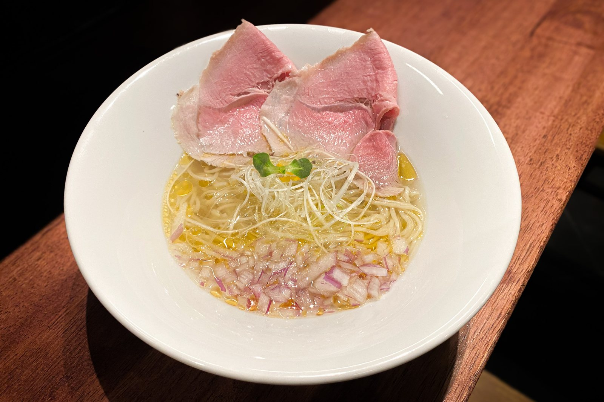
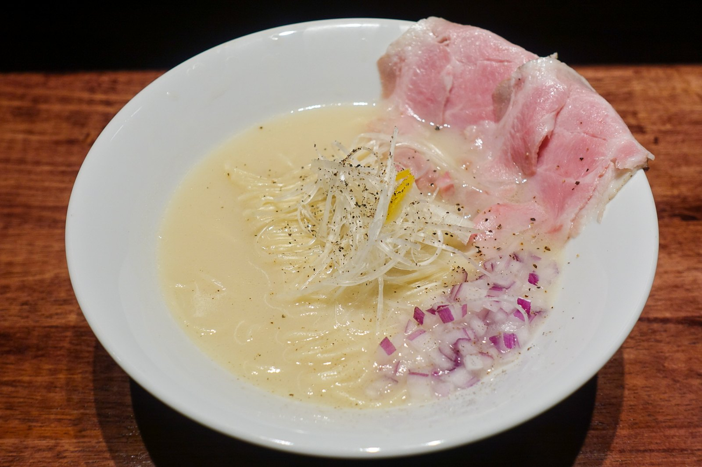
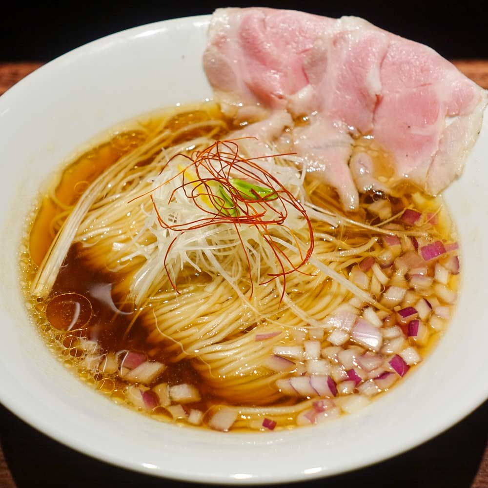
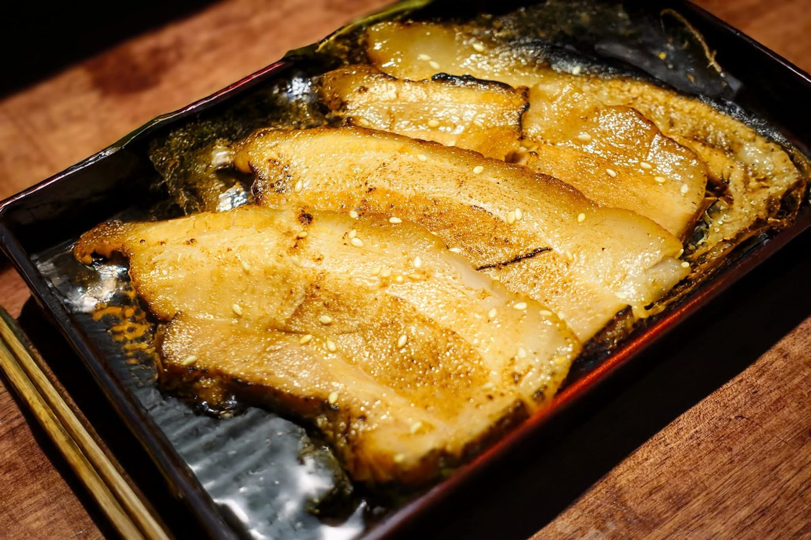

โชยุราเมน (M)
น้ำซุปไก่ใสปรุงด้วยโชยุ รสเบา ทานง่าย เหมาะเป็นชามเบาๆ ปิดท้ายมื้อค่ำ
ราเมนไก่ที่ดูแลสูตรโดย Yuya Tsujita เจ้าของ Men LABO Yuisou ร้านราเมนในอาวาซะ โอซาก้า ทานได้ทั้งมื้อกลางวันและมื้อค่ำที่ Tree Town ซอยบัวขาว
Menlabo เปิดที่พัทยาเมื่อเดือนมีนาคม 2024 โดยเริ่มจากราเมนเพียงเมนูเดียว คือชิโอะราเมนน้ำซุปไก่ใส รสเบา ปรุงด้วยเกลือ ลูกค้าเริ่มเรียกร้านนี้ว่า “ร้านราเมนลับในซอยบัวขาว” แล้วชื่อร้านก็ค่อยๆ เป็นที่รู้จัก
Yuya Tsujita เป็นเจ้าของ Men LABO Yuisou ร้านราเมนในอาวาซะ โอซาก้า เขาทำราเมนที่ชูรสชาติของไก่ Menlabo เป็นสาขาต่างประเทศของ Men LABO Yuisou และเริ่มต้นที่พัทยาในฐานะร้านราเมน ปัจจุบันเราเป็นอิซากายะสไตล์โอซาก้า ร้านอาหารญี่ปุ่นที่สั่งอาหารมาแบ่งกันทาน ส่วนราเมนยังคงดูแลสูตรโดยคุณ Tsujita เหมือนเดิม
เลือกได้ระหว่าง “ทันเร” น้ำซุปไก่ใส รสเบา และ “ไพตัน” น้ำซุปไก่เข้มข้น แต่ละแบบมีทั้งชิโอะ (เกลือ) และโชยุ (ซีอิ๊วญี่ปุ่น)
น้ำซุปไก่ใสปรุงด้วยโชยุ รสเบา ทานง่าย เหมาะเป็นชามเบาๆ ปิดท้ายมื้อค่ำ

น้ำซุปไก่ใสปรุงด้วยชิโอะ (เกลือ) ให้รสไก่เด่นชัด และเป็นราเมนชามแรกของ Menlabo

น้ำซุปไพตันเคี่ยวนานจนข้นนุ่ม ปรุงด้วยชิโอะ (เกลือ) เหมาะกับวันที่อยากทานราเมนรสเข้มขึ้น

น้ำซุปไพตันข้นนุ่ม ผสานความลึกและกลิ่นหอมของโชยุ
ลองราเมนน้ำซุปไข่ข้น (Jan Men) เมนูเส้นจากเมืองชิมันโตะ จังหวัดโคจิ ประเทศญี่ปุ่น น้ำซุปข้นรสเผ็ดกลมกล่อม ใส่กุยช่ายและไข่ตี ที่ Menlabo เราใช้หมูชาชูปรุงอุณหภูมิต่ำแทนเครื่องใน เผ็ดเพียงเล็กน้อย
ราคาเป็นเงินบาท รวม VAT แล้ว
น้ำซุปไก่ใสของเราเคี่ยวจากโครงไก่ในร้านทุกเช้า ส่วนน้ำซุปไพตันเข้มข้นเคี่ยวแยกอีกหม้อ
คาเอชิ คือ ซอสปรุงรสเข้มข้นที่กำหนดรสชาติของแต่ละชาม ทำตามสูตรเฉพาะของเราและนำเข้าจากญี่ปุ่น

น้ำมันหอมที่ใส่เป็นขั้นตอนสุดท้ายใช้เปลือกส้มให้กลิ่นหอมอ่อนๆ ส่วนพริกเพิ่มความเผ็ดเล็กน้อย หากไม่ทานเผ็ด แจ้งพนักงานได้ตอนสั่ง

หมูสันคอนุ่มชุ่มฉ่ำ ไม่กลบรสน้ำซุปไก่ ปรุงช้าๆ ในน้ำอุณหภูมิ 65–70℃ นาน 3 ชั่วโมง 20 นาที

สั่งหมูสามชั้นเบิร์นไฟมาทานคู่กับราเมน เนื้อนุ่ม ผิวหอมจากการเบิร์นไฟ เคี่ยวด้วยไฟอ่อน 2 ชั่วโมงในโชยุชั้นดี สาเก และน้ำตาล

เคาน์เตอร์มี 6 ที่นั่ง มาคนเดียวก็นั่งได้สบาย เมนูมีทั้งภาษาญี่ปุ่น อังกฤษ และไทย
มื้อกลางวัน ทานราเมนคู่กับชุดอาหาร มื้อค่ำ ลองสั่งอาหารอิซากายะสไตล์โอซาก้าสักสองสามจานมาแบ่งกัน แล้วปิดท้ายด้วยราเมน นี่คือวิธีที่เราแนะนำ
สั่งเดลิเวอรี่ได้ทาง Grab หรือ LINE MAN ส่วนน้ำซุปไพตันจะจับตัวเมื่อเย็นลง จึงมีให้ทานเฉพาะที่ร้าน